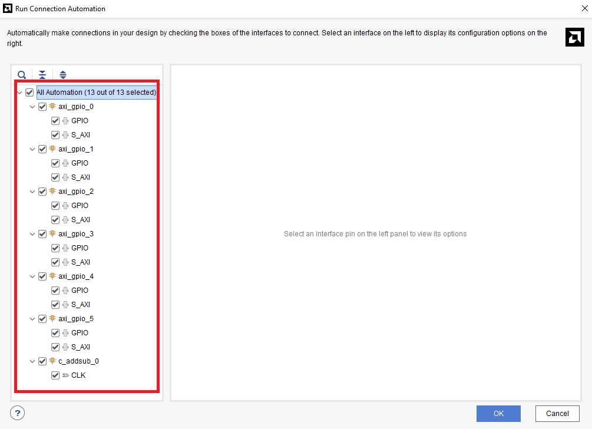
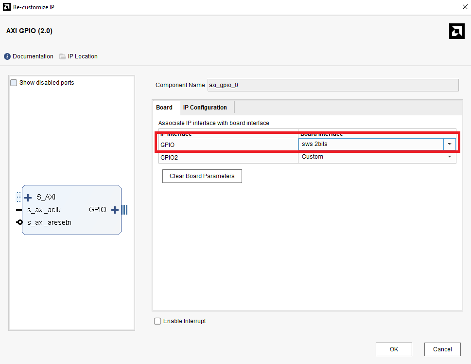
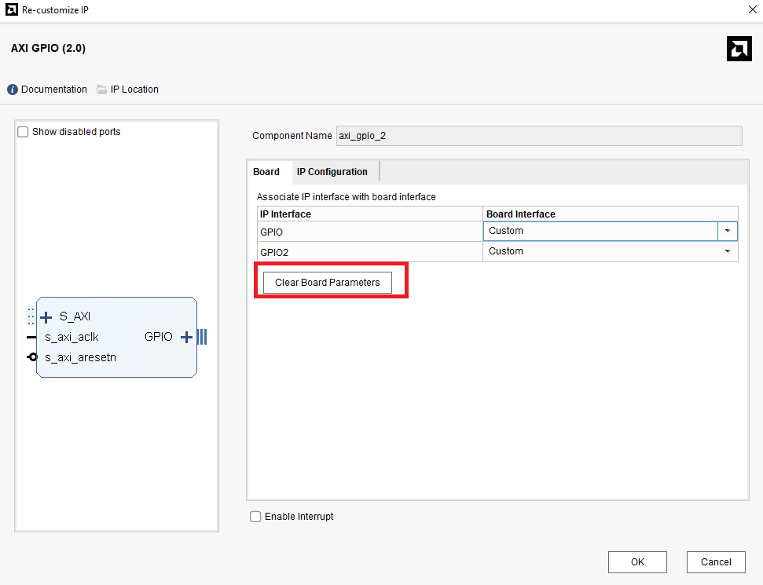
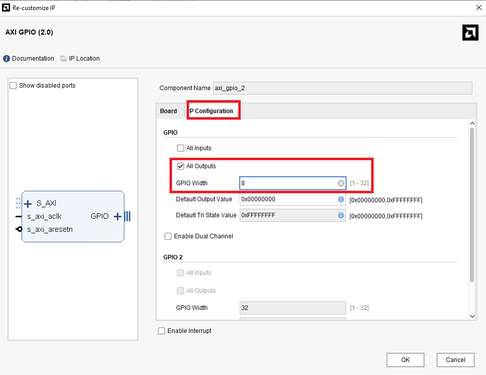
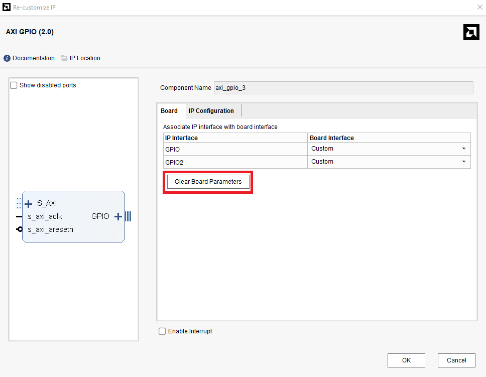
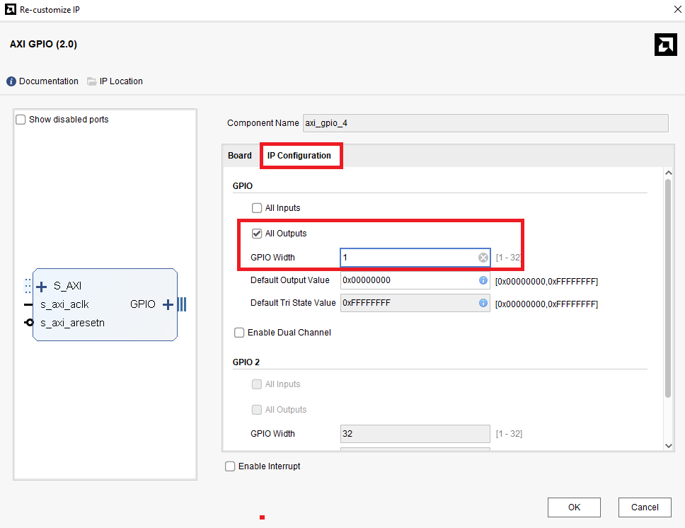
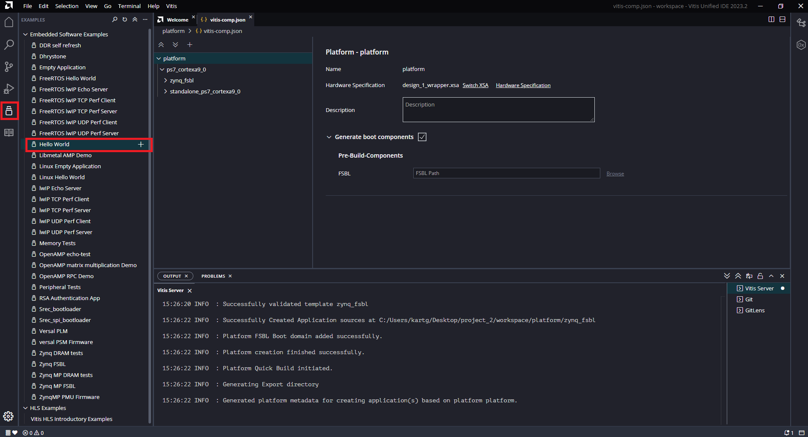
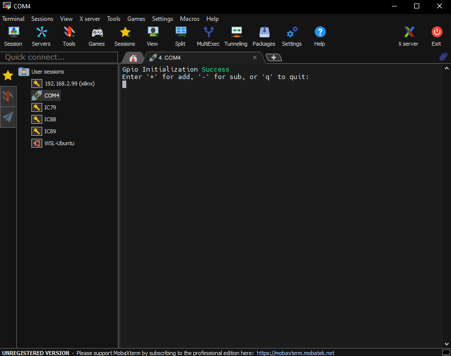

Part2-AXI-GPIO
本章將介紹如何使用 AXI GPIO (General Purpose Input/Output) IP，透過軟體程式控制板子上的 Switch 與 LED，並進一步將資料寫入 GPIO 作為控制訊號，驅動硬體電路（如 Adder/Subtracter）。
Purpose
透過本章節的實作，學習如何使用 AXI GPIO IP 與 Processing System (PS) 進行互動，並透過軟體程式：
-
控制 GPIO 輸出，例如點亮 LED 或傳送控制訊號至硬體模組（Adder/Subtracter）
-
讀取 GPIO 輸入，例如從 Switch 或其他感測裝置獲取訊號
-
實作一個簡單的可控制加減法運算電路，並可透過 UART 互動式控制與結果顯示
Part 2.1 Vivado Block Design
-
Create a new Vivado Project
-
Create a new Block Design
-
先加入
ZYNQ7_Processing System並點選上方Run Block Automation
-
對
ZYNQ7 Processing System點兩下進入設定，點選左側Peripheral I/O pins，將全部都關掉後，打開UART0就好
-
再加入
六個 GPIO、Adder/Subtracter、Constant
-
點選上方綠色橫幅
Run Connection Automation，並全部打勾按OK
自動連線完成後，點選
Regenerate Layout，讓 Vivado 幫你自動排版
-
移除所有
GPIO的 Port
-
接下來要依序對各個 GPIO 做不同的設定，需要對清楚名稱，若沒有照順序則需要修改 C code
-
axi_gpio_0:

-
axi_gpio_1:

-
axi_gpio_2:


-
axi_gpio_3:


-
axi_gpio_4:


-
axi_gpio_5:


-
-
調整
Constant設定
-
調整
Adder/Subtracter設定
📌 Fabric / DSP ?
在設定Adder/Subtracter的設定時可以看到最上面有一個implement using的選項，在 FPGA 上面，運算邏輯通常會透過LUT和DSP的方式下去實作。Fabric：使用 FPGA 中的 Lookup Table (LUT) 與邏輯閘來實現加減法邏輯。
- 適合位元數較少（如 8 或 16-bit）的基本加減法運算
- 不會占用 DSP 資源，適合小型邏輯
DSP：使用 FPGA 內建的 DSP Slice，即專用的數位訊號處理器資源。
- 適合處理高位元運算（如 32-bit 加法、乘法、MAC）
- 高效能、高吞吐，常用於影像處理、機器學習中的
MAC運算
📌 What's MAC operation?
MAC（Multiply-Accumulate）指的是「乘加運算」，例如a × b + c，是數位濾波器、CNN 神經網路等運算核心，DSP Slice 專門針對此類運算設計。 -
將
axi_gpio_2、axi_gpio_3、axi_gpio_4、axi_gpio_5、Adder/Subtracter、Constant，依照下方圖的方式做連接
-
連接完後點選上方
Run Connection Automation，並全部打勾
-
最後點選
Validation和Regenerate Layout，看看有沒有錯誤
-
完整電路

-
Create HDL Wrapper
-
Generate Bitstream
-
File -> Export -> Export Hardware
-
這樣就完成 Vivado 端的電路設計部分，再來要去 Vitis 做軟體設計
Part 2.2 Vitis Project
-
照
Part1的方式創立一個 Vitis Project -
使用 Part2.1 產生的
.xsa檔案，創建Platform Component -
一樣使用
Example Design裡面的Hello_World作為初始的Application Project
-
將
Application Project內的hello_world.c替換成該次Lab裡面的src/main.c
-
先
build platform -
再
build application -
連接上 PYNQ 板
-
打開
MobaXtermSerial 方式連接上 PYNQ -
點選
Run
Part 2.3 Run & Result
當執行程式後，使用者可以透過 UART 輸入操作指令與數字，進行加法或減法的運算，同時觀察輸出結果與 LED 顯示：
-
透過 UART 輸入 '+' 或 '-'：決定此次要進行加法或減法。
-
輸入第一與第二個操作數（0~255）：分別寫入至 AXI GPIO，作為電路的輸入資料。
-
由 Adder/Subtracter 模組計算結果：將結果透過 GPIO 回傳到電腦顯示。
-
同時可使用 Switch 切換不同狀態，並透過 LED 實時顯示對應的二進位值。

📌 透過 AXI GPIO IP Block 來存取硬體上的 Switch 和 LED 等板子上的硬體時，通常不需要自己手動設定 Constraint，Vivado會自動幫你生成其對應的
Physical Constraint
e.g.:project\project.gen\sources_1\bd\design_1\ip\design_1_axi_gpio_0_0
#--------------------Physical Constraints-----------------
set_property BOARD_PART_PIN {sws_2bits_tri_i_0} [get_ports gpio_io_i[0]]
set_property BOARD_PART_PIN {sws_2bits_tri_i_1} [get_ports gpio_io_i[1]]